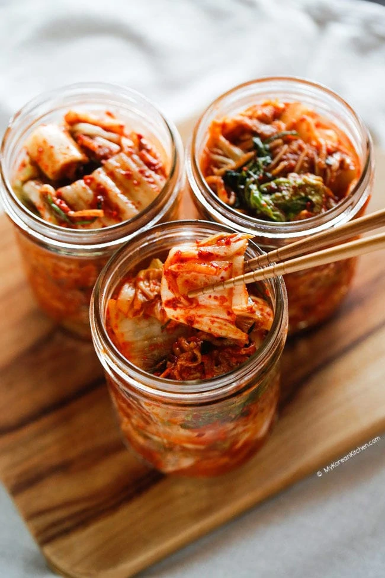

Kimchi

Napa cabbage kimchi
Kimchi is a type of fermented food that originates from Korea. Kimchi's name varies depending on the main vegetables used. Here, you will find a napa cabbage kimchi recipe made in pogi kimchi style.
This is the most popular variety and is very versatile! You can either eat it as is or use it in your cooking. It's also a healthy and tasty food with many benefits. Let's make it at home!
Ingredients
- Napa cabbage
- Water
- Sea salt or rock salt
- Rice flour
- Chili flakes
- Radish
- Fish sauce
- Fermented shrimp
- Carrots
- Garlic
- Ginger
- Sugar
- Onion
Steps
- Cut the napa cabbage into quarters.
- Dissolve the salt in the water.
- Put the salted cabbage in a plastic bag and close it for 6 hours.
- Rinse and drain the cabbage.
- Mix the rice flour with water.
- Add chili flakes.
- Add radish, sea salt, fish sauce, and fermented shrimp.
- Spread the seasoning over each leaf of the cabbage.
- Transfer the kimchi into an airtight container and leave it for 24 hours.